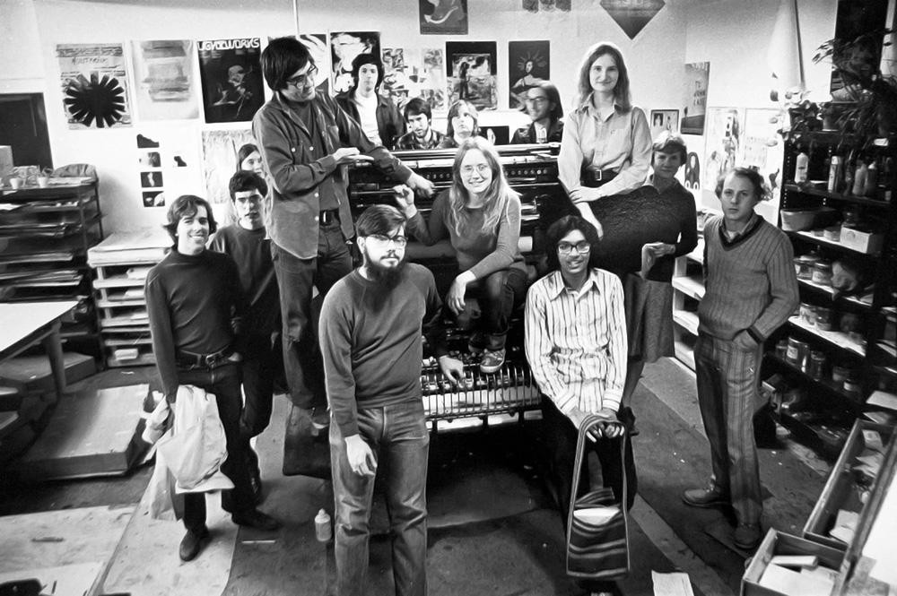

Visible Language Workshop(VLW)
Cooper carried that style–along with a focus on interactive media design–into her next big venture when, in 1974, she co-founded the Visible Language Workshop (VLW) in MIT’s Department of Architecture. 
NEXT: Time at the VLW